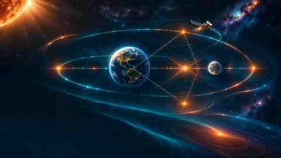

Miejsca, w których grawitacja udaje spokój.
Między światami istnieje pięć niewidzialnych punktów. Nie świecą. Nie mają powierzchni. A jednak potrafią wyznaczać miejsca dla teleskopów, sond i nieoczekiwanych ścieżek przez kosmos.
ZACZNIJMY OD POZORNEGO PARADOKSU
Jak można pozostać w miejscu, gdy wszystko się porusza?
Wyobraź sobie, że patrzysz na Ziemię i Księżyc z odległości wielu milionów kilometrów. Nie ma tam żadnych znaków drogowych, żadnych granic, żadnych punktów, w których ktoś wyłączył grawitację. A jednak matematyka potrafi wskazać w ich otoczeniu pięć szczególnych adresów.
Jeżeli odpowiednio mały obiekt znajdzie się dokładnie w jednym z tych miejsc — z właściwą prędkością — może zachowywać stałe położenie względem obu większych ciał w układzie obracającym się razem z nimi. W nieruchomym układzie odniesienia nadal będzie krążył. To nie zastój, tylko precyzyjnie uporządkowany ruch.
Te adresy nazywamy punktami Lagrange’a. Oznaczamy je L1, L2, L3, L4 i L5. Ich odkrycie zamieniło pozorną pustkę między ciałami niebieskimi w prawdziwą mapę możliwości.
PIĘĆ MIEJSC, PIĘĆ HISTORII
Wystarczy jedna linia i dwa trójkąty.
Trzy punkty znajdują się na linii łączącej dwa masywne ciała. L1 leży pomiędzy nimi; L2 — za mniejszym; L3 — po przeciwnej stronie większego ciała. Te trzy miejsca są niestabilne: niewielkie odchylenie z reguły narasta, jeżeli nie wykonuje się korekt.
Dwa pozostałe punkty, L4 i L5, tworzą z głównymi ciałami trójkąty równoboczne. Dla odpowiedniego stosunku mas, w idealnym modelu, mogą być stabilne wobec niewielkich zaburzeń. Nie dlatego, że grawitacja zniknęła, lecz dlatego, że ruch w obracającym się układzie oraz efekt Coriolisa tworzą szczególną dynamikę.
Pomiędzy światami
Brama na linii łączącej większe i mniejsze ciało. W pobliżu można prowadzić misje wymagające stałej geometrii obserwacji.
NIESTABILNYPo ciemnej stronie
Leży dalej niż mniejsze ciało, patrząc od większego. Odpowiadający mu punkt układu Słońce–Ziemia pomaga prowadzić obserwacje kosmosu.
NIESTABILNYZa większym ciałem
Trzeci z punktów współliniowych. Geometrycznie elegancki, ale nie tworzy sam z siebie trwałej „przystani”.
NIESTABILNYSześćdziesiąt stopni przed
Jeden z wierzchołków trójkąta równobocznego. W modelu kołowym może pozwalać na librację małego obiektu.
STABILNY W IDEALNYM MODELUSześćdziesiąt stopni za
Lustrzany partner L4. Także może utrzymywać oscylujący ruch bez natychmiastowej ucieczki.
STABILNY W IDEALNYM MODELUINTERAKTYWNE DOŚWIADCZENIE / MODEL TRZECH CIAŁ
Pchnij sondę. Sprawdź, co zrobi grawitacja.
Wybierz punkt Lagrange’a, zmień niewielką prędkość początkową i obserwuj obliczoną trajektorię w układzie obracającym się razem z Ziemią i Księżycem. Czy sonda pozostanie w sąsiedztwie punktu, czy zacznie od niego uciekać?
Schemat edukacyjny. Rozmiary ciał nie są w skali; punkty i trajektorie wyznaczane są dla kołowego ograniczonego problemu trzech ciał.
WYBIERZ PUNKT
Sonda startuje ok. 1500 km obok punktu. Obliczamy jej ruch w obracającym się układzie Ziemia–Księżyc, bez Słońca, bez silników i bez manewrów utrzymania pozycji. To eksperyment dydaktyczny, nie plan prawdziwego lotu.
OD CZEGO ZALEŻY PRZYSZŁOŚĆ SONDY
Mały impuls. Wielkie konsekwencje.
W L1, L2 i L3 nawet drobne przesunięcie może rozwinąć się w coraz większe odejście od położenia równowagi. To trochę jak próba postawienia ołówka na czubku: doskonała równowaga istnieje w matematyce, ale w naturze łatwo ją utracić.
L4 i L5 oferują inny rodzaj odpowiedzi. Przy odpowiedniej relacji mas pojawiają się ruchy libracyjne — sonda może kreślić pętle wokół punktu zamiast od niego uciekać. Nie oznacza to stabilności w każdych warunkach: w rzeczywistym Układzie Słonecznym oddziałują także inne planety, Słońce i promieniowanie.
Dlatego mówimy o stabilności w konkretnym modelu, a nie o magicznym wyłączeniu sił. Model jest użyteczny właśnie wtedy, gdy znamy jego granice.
Wymagają kontroli orbit i czasem korekt kursu; sam punkt nie utrzyma statku w swoim sąsiedztwie.
W ograniczonym modelu kołowym stabilność liniowa zachodzi, gdy stosunek mas dużego do małego ciała przekracza ok. 24,96.
PUNKT L2 UKŁADU SŁOŃCE–ZIEMIA
Webb nie stoi na niebie. Tańczy wokół niewidzialnego punktu.
Około 1,5 miliona kilometrów od Ziemi, w kierunku przeciwnym do Słońca, znajduje się punkt L2 układu Słońce–Ziemia. To jego okolice wykorzystuje Kosmiczny Teleskop Jamesa Webba. Uwaga: nie chodzi tutaj o L2 układu Ziemia–Księżyc z naszego doświadczenia. Każda para masywnych ciał ma własne pięć punktów Lagrange’a.
Webb nie spoczywa dokładnie w L2. Krąży wokół tego punktu po rozległej orbicie halo, a zarazem obiega Słońce wraz z Ziemią. Taka geometria pomaga osłonie przeciwsłonecznej oddzielać czułe instrumenty od promieniowania Słońca, Ziemi i Księżyca oraz utrzymywać dogodne warunki łączności.
Teleskop co pewien czas wykonuje niewielkie manewry. Tu równowaga nie jest miejscem, w którym przestajemy działać — jest miejscem, które nauczyliśmy się wykorzystywać.
Orbita halo nie oznacza, że teleskop okrąża samą Ziemię. To orbitujący Słońce układ odniesienia.
OD NEWTONA DO WSPÓŁCZESNYCH SOND
Trzecie ciało zmienia wszystko.
W klasycznym problemie dwóch ciał ruch względem siebie można opisać eleganckimi orbitami Keplera. Dodanie trzeciego ciała otwiera znacznie bogatszy świat zależności: jego trajektoria może być wrażliwa na początkowe położenie i prędkość. Ogólny problem trzech ciał nie ma prostego wzoru dającego wszystkie możliwe rozwiązania.
Badanie położeń równowagi rozpoczął Leonhard Euler, a Joseph-Louis Lagrange opisał w 1772 roku rozwiązania trójkątne. W astronomii posługujemy się szczególnym, ograniczonym problemem trzech ciał: dwie duże masy poruszają się po zadanych orbitach, a masa trzeciego ciała jest pomijalna.
To uproszczenie pozwala nam widzieć strukturę niewidzialnych korytarzy przestrzeni. Współczesna astronautyka rozwija tę ideę, projektując trajektorie w złożonych polach grawitacyjnych.
07 — PRZEJDŹ DO PEŁNEGO DOŚWIADCZENIA
Laboratorium Grawitacji.
To nie koniec eksperymentów. Uruchom istniejący silnik ATLAS SOLARIS, aby badać orbitalną dynamikę i obszary równowagi w pełnym laboratorium.
Kosmos czeka na Twój następny ruch.
Symulator zostanie wczytany dopiero po kliknięciu. Dzięki temu artykuł pozostaje lekki i przyjazny także dla telefonów i starszych przeglądarek.